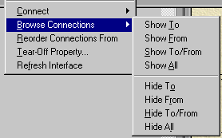

Design Documentation
VisualAge for Java can provide a very good way to help document your design!
You won't be maintaining that program forever...
Realize it or not, you won't be the one who maintains your program forever. Or at least you shouldn't want to be the one who maintains that program forever. Don't you want to go off and program new stuff, and leave the minor tweaks to someone else?
But if I'm not maintaining it, I'll have to (gack) document it!
Of course you'll need to write documentation (as well as comment your code) for someone else to easily understand what you intended to happen in your code. A maintenance programmer generally won't have time to thoroughly study all of your code to figure out what it's doing. Design documentation is critical to help him (that's an inclusive "him" for all you "him/her" types out there) target the area of the program that he (again, inclusive) really needs to look at. Always ask yourself: "If I didn't know this (well-structured) wad of code, how would I know where to start looking to fix a problem?"
So how can VisualAge help reduce my documentation burden?
Simple. Use the Visual Composition Editor!
When programming GUI applications, or even non-GUI applications, you can use the Visual Composition Editor to essentially draw the interactions between components in your program. In most cases, this can save time programming event logic. In other cases it may take slightly longer than hand coding. However, those connections stay long after you've washed your hands at the code. A maintenance programmer can say to himself "hmm, things don't work quite right when the user uses the "add" button. Hey! I'll look at the connections from the add button and see what actions are triggered!"
This can really assist the maintenance programmer, and you didn't have to write a separate document stating what actions you set up for that action button!
But I still write code, right?
Obviously you'll still need to write code for your application to work. But I offer a few words of advice to help make your design more obvious:
- Use the "user code" blocks that VisualAge sets up very sparingly.
VisualAge generates lots of methods to handle the connections that you set up. In each of these methods, there are one or more blocks that are delimited by comments that say something like
// user code begin {1} // user code endYou can safely add your own code between these comments, and VisualAge will keep it (as long as you don't delete the connection in the VCE...)
But, I like to recommend that you use these as infrequently as possible! Why, you ask? Think about your poor maintenance programmer again. There is no indication that you've added code in those blocks. Your maintenance programmer will have to dig through (potentially) tons of generated code to finally find the one place where you put
setValue(10);
in one of these blocks. That can be a real bear to find!
- Event-to-script connections are your friends!
Rather than add code in the "user code" blocks, add an event-to-script connection either before or after the connection you wanted to modify. This adds good design documentation, as the maintenance programmer can see that you're performing some modification. It's no longer hidden!
- Unless absolutely necessary, do not add your own event handling!
If you are using the Visual Composition Editor to create a bean (or application/applet), it will generate lots of event handling code for you. I strongly recommend that you don't throw your own event-handling code into that bean as well! Someone looking at your design in the Visual Composition Editor will assume that the connections are the only events being handled. They may not even consider that you could have set up your own listeners in your code.
But now I have three billion connections on the screen!
This can be daunting (and can hurt performance when loading into the Visual Composition Editor.) But, as I stated above, unless you want to be tied to that code for the rest of your life, make it easy for Mr. Maintenance Programmer!!! There are a few things you can do to help this:
- If you'll be doing a lot of editing on a class, do not close the class browser (which contains the Visual Composition Editor) for that class! If you do, you'll have to wait while VisualAge reloads/computes the connection information again.
- If you can't see your components because there are too many connections:
- Click in an unoccupied area of the Visual Composition Editor design area. This makes sure that no component is selected. Note that the show/hide connection buttons affect the currently-selected component, or, if no component is selected, all components in the design area.
- Click on the "hide connections" button on the tool bar. This will hide all connections.
- Click on the component that you want to see connections.
- Bring up connections in one of the following ways:
- Click on the "show connections" button on the toolbar. This shows all connections that involve the component.
- Bring up the pop-up menu for the component. Choose one of the following options:

-
Show All and Hide All act the same as the show/hide connection buttons
-
Show To and Hide To shows/hides the connections that use this component as a target.
-
Show From and Hide From adds/hides the connections that use this component as a source.
-
Show To/From and Hide To/From adds/hides connections that use this component as a source or target.
Note that these show/hide actions are cumulative. That is, selecting Show To and then Show From will result in all connections using the component as a target or source being displayed. This applies to the show/hide connection buttons as well.
-
-
Note: The VisualAge development team is working on some reporting mechanisms that will display all connections. Note sure of a timeframe for this, though...
Copyright © 1996-2013, Scott Stanchfield. All Rights Reserved.
Contact me at scott@javadude.com
JavaDude.com Home
Rounded-corner figures based on "More Snazzy Borders" by
Stu Nicholls
 Want
to hear about new stuff at JavaDude.com? Use this RSS Feed!
Want
to hear about new stuff at JavaDude.com? Use this RSS Feed!